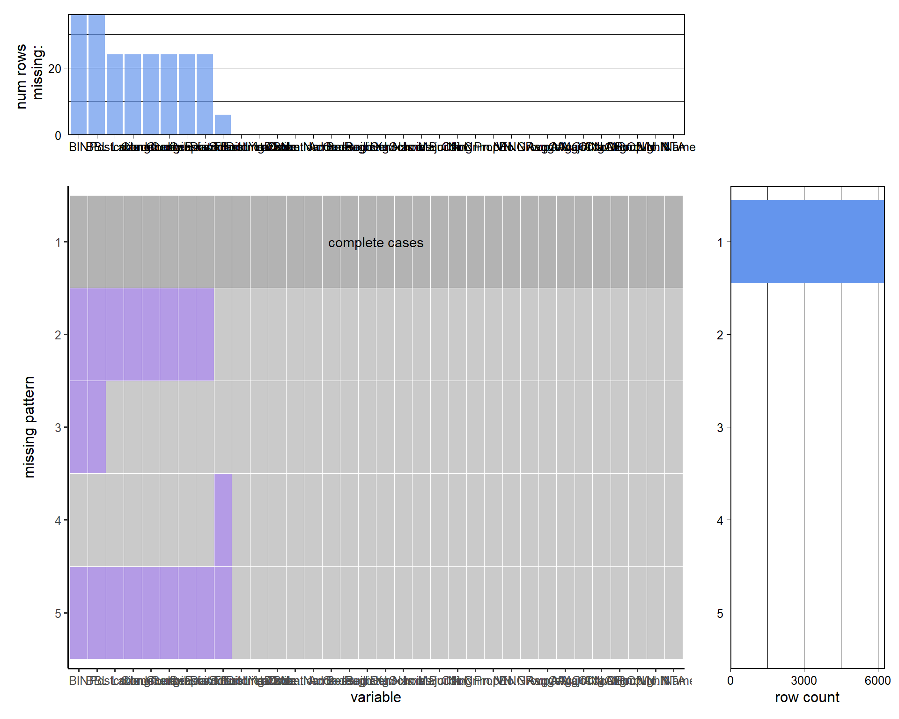
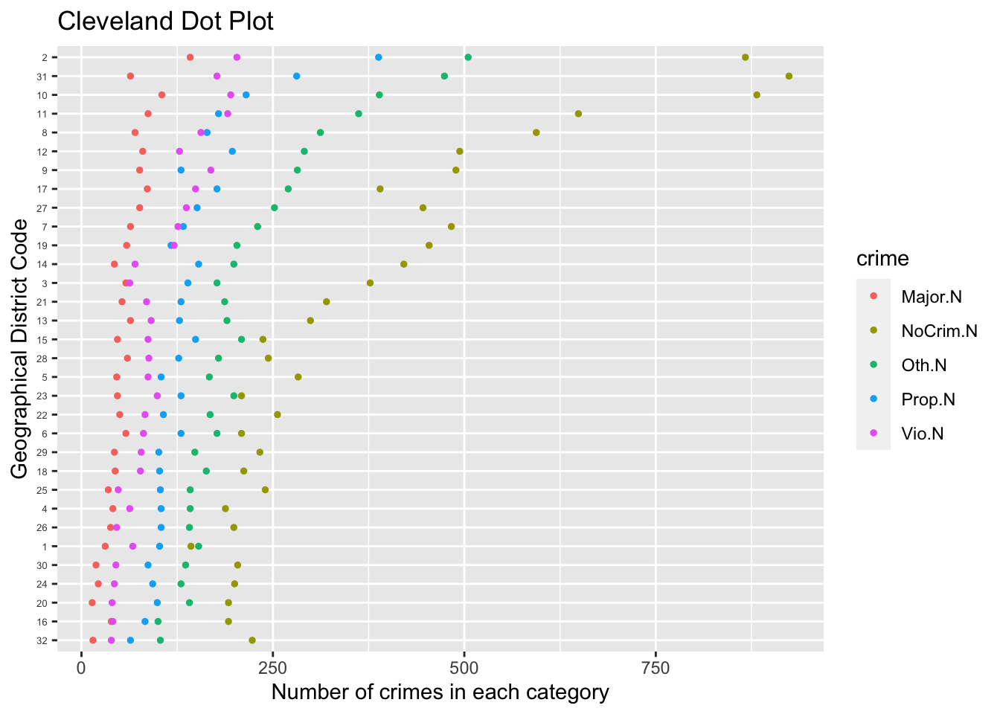

Chapter 3 Data
3.1 Sources
The data is collected by the New York City Police Department (NYPD) and is published by the New York City Department of Education (DOE). The NYPD is responsible for maintaining the crime data for incidents that occurred among public schools in New York City, which is then provided to the DOE for compilation, indicating that maintenance of the data is a collaborative work by the NYPD and the DOE. We did come across a few datasets that sparked our interest on NYC Open Data. One of them is the school safety report of New York City public schools from 2010 to 2016, and the other one is the school safety report of New York City public schools from 2015 to 2016. Both datasets include identical columns except one includes data over years instead of just one. As we are also interested in the shift in the number of crimes over time, we decided to go with the one that is from 2010 to 2016.
There are 34 variables with over 6000 rows in the data. Some example variables would be the number of crimes in different categories, including major, other, non-criminal, property, and violent, boroughs where the location is situated, number of registered students at each location, and school year, indicating that the data would be sufficient for us to analyze and extract answers and information regarding school safety issues in New York City. At first glance, we realized there are a lot of NAs in variables like Major.N, which is the number of major crimes, and RangeA, which is the range the building population falls in. After diving deeper into the data and doing more research, we found out that the data presented is aggregated by building location rather than by school, which would explain the NAs only appear when the school is located at a location that also includes other schools. We also noticed that whenever RangeA has NAs, the rest of values in that row are also missing, indicating that the school might not exist anymore. Furthermore, we discovered that there are some schools indicated to be in “District 0,” which does not exist. We then looked them up and found out that those schools were either shut down or repurposed. Another significant issue with the data is that while the data claims to include data from 2010 to 2016, it actually only includes data from 2013-2016. Nevertheless, we believe that it would still be enough for us to conduct the analysis and extract useful information.
3.2 Cleaning / transformation
As mentioned, the data presented is aggregated by building location rather than by school, indicating that we could just focus on the rows that include overall information for the specific location, which is why we decided to drop the rows that belong to a building location but do not contain useful information. We believe our analysis could be done more efficiently by doing so. We also discovered that rows with NAs in column RangeA and are located in “District 0” also do not contain meaningful information. Thus, we decided to filter out those rows as well. As there are over 30 columns in our data, we thought it would be easier and more efficient to conduct the exploratory data analysis if we just keep the columns that we are going to use, and thus, we have our processed data that includes 10 variables: School.Year, which is the school year the data was recorded, Borough, the NYC borough the location is situated in, Geographical.District.Code, which is the school’s geographical district as defined by the NYC DOE, Register, which is the number of registered students, X..Schools, which is the number of schools at the specific location, Major.N, which is the number of major crimes, Oth.N, which is the number of other crimes, NoCrim.N, which is the number of non-criminal crimes, Prop.N, which is the number of property crimes, and Vio.N, which is the number of property crimes, with over 3000 rows, which we believe would still be sufficient for use to conduct the analysis and extract meaning information.
3.3 Missing value analysis
## BIN BBL
## 36 36
## Postcode Latitude
## 24 24
## Longitude Community.Board
## 24 24
## Council.District Census.Tract
## 24 24
## Geographical.District.Code School.Year
## 6 0
## Building.Code DBN
## 0 0
## Location.Name Location.Code
## 0 0
## Address Borough
## 0 0
## Register Building.Name
## 0 0
## X..Schools Schools.in.Building
## 0 0
## Major.N Oth.N
## 0 0
## NoCrim.N Prop.N
## 0 0
## Vio.N ENGroupA
## 0 0
## RangeA AvgOfMajor.N
## 0 0
## AvgOfOth.N AvgOfNoCrim.N
## 0 0
## AvgOfProp.N AvgOfVio.N
## 0 0
## Borough.Name NTA
## 0 0
We first conduct missing value analysis on the raw data. From the above, we can observe that most of the columns that include missing values are the columns that we are not going to use for our analysis, such as BIN or BBl. By looking at the graph, we can notice that in most cases, the rows are complete cases, meaning that there are no missing values in most of the rows. While there are indeed some missing value patterns in the data, we can learn from the chart on the right that those patterns do not really exist in many rows, indicating that they should not be that big of a problem when we conduct the exploratory data analysis.
## School.Year Borough
## 0 0
## Geographical.District.Code Register
## 0 0
## X..Schools Major.N
## 0 0
## Oth.N NoCrim.N
## 0 0
## Prop.N Vio.N
## 0 0
We then conduct the missing data analysis again after data cleaning and transformation. From the above, we can notice that all of the rows are complete cases, meaning that all of the rows in our processed data do not contain any missing values, which indicates that missing value would not be an issue when we conduct the analysis and we are safe to proceed.